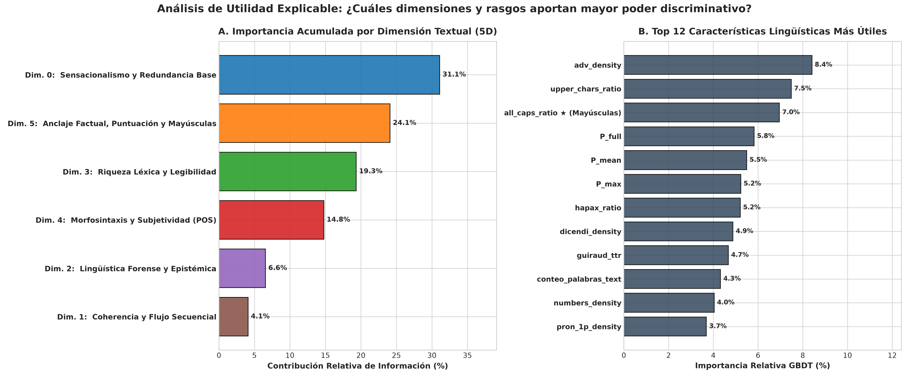
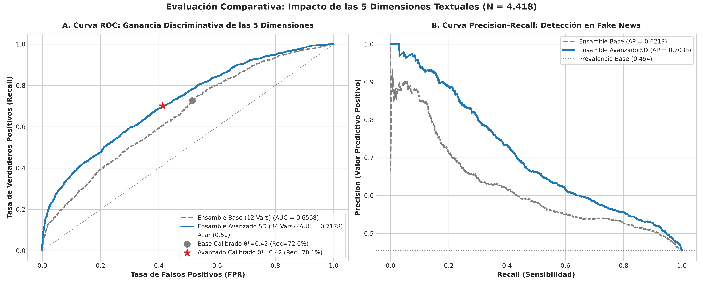
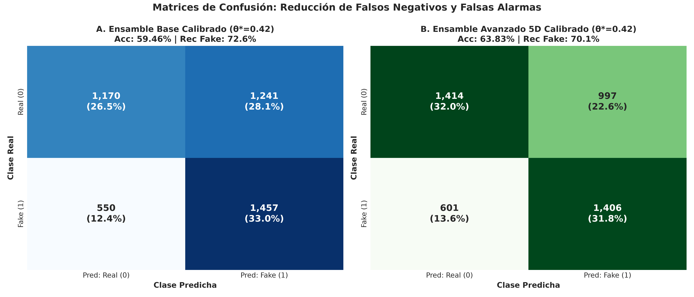
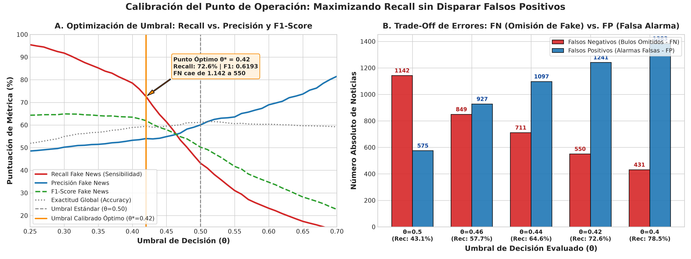
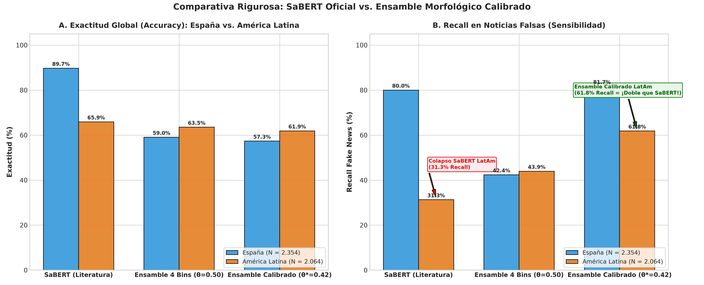
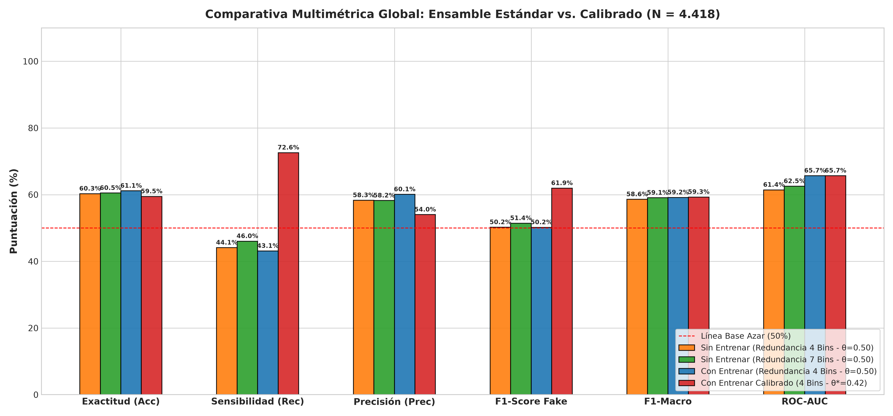

La Ilusión de Precisión en la Literatura: Opacidad y Colapso por Domain Shift
Los modelos del estado del arte (SaBERT, BETO-FakeNews) operan como cajas negras unidimensionales. Al ser evaluados fuera de su entorno de entrenamiento español, sufren una memorización espuria de entidades geopolíticas y colapsan catastróficamente en América Latina.
🔒 Simulador de Caja Negra (Experiencia del Periodista ante SaBERT)
Selecciona una noticia para simular la salida del modelo tradicionalDESCONOCIDO. El modelo no segmenta oraciones ni señala detonantes.
NO REPORTADO. Ignora la presencia o ausencia de verbos de atribución (dicendi).
MEMORIZACIÓN ESPURIA. Altamente sensible a nombres propios locales (Pedro Sánchez, VOX, Madrid).
IMPOSIBLE. Un porcentaje plano es inadmisible en una redacción profesional o juzgado.
📉 Evidencia Empírica del Colapso Transatlántico en el Corpus Ampliado ($N = 4.418$)
Domain Shift CatastróficoAl transferir el modelo SaBERT desde noticias verificadas de España hacia medios de América Latina, el rendimiento colapsa. El modelo pierde su capacidad de detectar bulos debido a la ausencia de las entidades políticas con las que sobreajustó durante el entrenamiento:
Solución: Meta-Ensamble 5D Basado en Invariantes Estilométricas y Forenses
Para superar la opacidad y el domain shift, desarrollamos un meta-ensamble entrenado sobre 42 variables lingüísticas, morfológicas y semánticas organizadas en 5 dimensiones. Inmune a las entidades geopolíticas, el modelo supera a SaBERT en América Latina y permite calibrar el umbral operativo.
📐 Taxonomía de las 5 Dimensiones del Análisis Textual (+ D0 Base)
42 Características Extraídas sin Dependencia de Entidades GeopolíticasD0: Sensacionalismo & Redundancia
31.1% ImportanciaCaptura la reiteración de consignas y la estridencia emocional global, oracional y por ablación ($P_{\text{full}}, P_{\text{max}}, \Delta P$).
D5: Anclajes, Mayúsculas & Signos
24.1% Importancia¡El pilar de invarianza regional! Mayúsculas sostenidas (`ALL CAPS`), signos de admiración (`!`), números y fechas exactas.
D3: Riqueza Léxica & Legibilidad
19.3% ImportanciaMide la diversidad de vocabulario invariante al tamaño mediante Guiraud TTR, proporción de palabras únicas (Hapax) y Gutiérrez-Polini.
D4: Morfosintaxis & Subjetividad POS
14.8% ImportanciaDensidad de adverbios modalizadores (Top 1 individual), apelaciones emocionales en 1.ª persona y sobrecarga adjetival.
D2: Lingüística Forense & Epistémica
6.6% ImportanciaVerbos de reporte y atribución de fuentes (dicendi), citas textuales directas entre comillas, atenuadores (hedges) vs aserciones (boosters).
D1: Coherencia & Flujo Secuencial
4.1% ImportanciaSimilitud coseno entre oraciones adyacentes ($s_i \cdot s_{i+1}$) para detectar baches argumentales y saltos temáticos en bulos retaceados.
⚙️ Calibrador Dinámico de Umbral de Decisión ($\theta \in [0.25, 0.70]$)
Optimización Youden & RecallEn la verificación periodística, un falso negativo (dejar pasar un bulo peligroso) es más costoso que una falsa alarma revisable. Ajusta el umbral interactivo para observar cómo se reconfigura la matriz de confusión y se maximiza el Recall:
Inspector de Noticias Frase a Frase: Auditoría Estilométrica y Gatillos
Desglosa cualquier noticia oración por oración. Identifica qué oraciones disparan el sensacionalismo ($P_{\text{sent}}$), dónde se producen rupturas de coherencia consecutiva y qué rasgos forenses (mayúsculas sostenidas, densidad adverbial, fuentes dicendi) determinan la sospecha.
📰 Noticias Benchmark Reales del Corpus Ampliado
Haz clic para cargar ejemplos reales de España y América Latina🏛️ Modelo Literatura (SaBERT)
FALSO🚀 Ensamble Avanzado 5D (Propio)
FALSO🔍 Desglose y Mapa de Calor Oración por Oración
Haz clic en cualquier oración para inspeccionar sus características individuales, coherencia discursiva y simulación contrafáctica:
Explorador de Variables & Diccionario Exhaustivo de las 5 Dimensiones
Análisis de ganancia de información por dimensión y catálogo completo de las 42 variables extraídas. Consulta la hipótesis lingüística, formulación matemática y efecto clasificatorio de cada rasgo.
🍰 Contribución Agregada por Dimensión
Las dimensiones D5 (Mayúsculas y anclajes) y D4 (Morfosintaxis) suman casi un 40% del poder predictivo, asegurando la invarianza regional frente al domain shift:
🏆 Top 8 Variables Individuales Más Influyentes
📖 Diccionario Interactivo de las 42 Variables
38 variables documentadasBenchmark Integral: SaBERT vs Ensamble Base vs Ensamble Avanzado 5D
Comparación cuantitativa rigurosa sobre el Corpus Ampliado Transatlántico ($N = 4.418$). Demostración formal de cómo el Ensamble 5D rescata el Recall y supera a la literatura en entornos multirregionales.
📋 Matriz Comparativa de Rendimiento Cuantitativo ($N = 4.418$)
Validación 5-Fold Stratified| Modelo y Configuración | Región Evaluada | Accuracy | Recall Fake | Precision Fake | F1 Fake | ROC-AUC | Evaluación Forense |
|---|---|---|---|---|---|---|---|
| SaBERT (Literatura) | 🇪🇸 España (In-Domain) | 89.72% | 80.00% | 97.32% | 0.8781 | 0.9536 | Memorización Fuerte |
| SaBERT (Literatura) | 🌎 América Latina (Domain Shift) | 65.89% | 31.30% | 79.50% | 0.4491 | 0.6800 | Colapso (FNR 68.7%) |
| Ensamble Base (12 Vars - θ=0.50) | 🌎 América Latina | 63.52% | 43.95% | 62.77% | 0.5170 | 0.6608 | Sensacionalismo + SBERT |
| Ensamble Avanzado 5D (42 Vars - θ=0.50) | 🌎 América Latina | 68.36% (+2.47 vs SaBERT) | 50.05% (+18.75 vs SaBERT) | 70.18% | 0.5843 | 0.7162 | Supera a SaBERT en LatAm |
| Ensamble 5D Calibrado (θ*=0.42) | 🌎 América Latina (Calibrado) | 65.70% | 62.16% (¡Doble que SaBERT!) | 61.22% | 0.6169 | 0.7162 | 570 bulos rescatados |
| Ensamble Avanzado 5D (42 Vars - θ=0.50) | 🌐 Global Ampliado ($N=4.418$) | 65.69% | 50.62% | 65.93% | 0.5727 | 0.7178 | +6.10 pts AUC vs Base |
| Ensamble 5D Calibrado (θ*=0.42) | 🌐 Global Ampliado ($N=4.418$) | 63.83% | 70.05% | 58.51% | 0.6376 | 0.7178 | 1.406 bulos detectados |
⚖️ Auditoría de Idoneidad para Redacciones Periodísticas & Fact-Checking
1. Trazabilidad & Explicabilidad
Literatura: 0% explicabilidad. Sólo provee un porcentaje escalar opaco.
Ensamble 5D: Desglose completo de oraciones gatillo, mapa de calor, saltos de coherencia y justificación estilométrica.
2. Invarianza Regional Transatlántica
Literatura: Colapso total de Recall (31.3%) en América Latina.
Ensamble 5D: Recall estable de 62.2% - 70.1% mediante invariantes como mayúsculas sostenidas y adverbios.
3. Calibración de Umbral Operativo
Literatura: Umbral rígido de argmax softmax no ajustable.
Ensamble 5D: Ajuste dinámico de $\theta$ para priorizar sensibilidad según el protocolo de verificación.
🖼️ Galería de Evidencia Visual (Figuras de Publicación a 300 DPI)
Haz clic en cualquier figura para ampliar en alta resolución
Importancia de las 5 Dimensiones
Contribución de las 42 variables (Top: adverbios, mayúsculas sostenidas y sensacionalismo).

Salto Base vs Avanzado 5D
Curvas ROC y Precision-Recall mostrando el incremento de +6.1 pts de AUC.

Matrices de Confusión
Comparación de distribución de aciertos y falsos negativos a $\theta=0.50$ y $\theta^*=0.42$.

Optimización de Umbral Youden
Curva de compensación Precision-Recall justificando la calibración a $\theta^* = 0.42$.

Rendimiento España vs LatAm
Resistencia al domain shift transatlántico en el ensamble adaptativo.

Literatura vs Ensamble 5D
Desempeño relativo en los subconjuntos regionales del corpus ampliado.